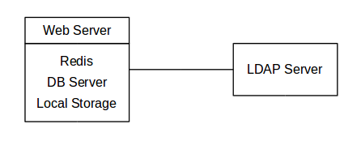
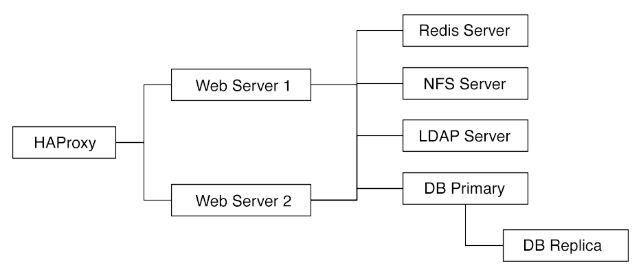
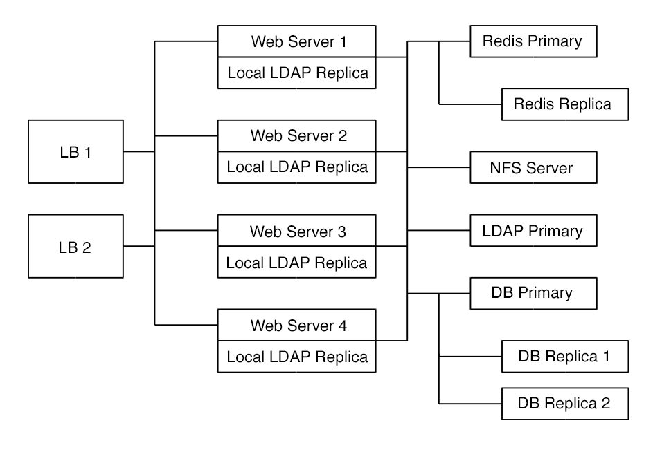

Deployment Recommendations
Introduction
This document is a guide for technical measures to size your physical environment regarding some general setups described in the scenarios below. It focuses on the software stack and may include some hardware recommendations. You can use any hardware as long the software is capable of running on it and delivers performance that meets your needs.
| Independent of the technical measures, you can decide at any time the ownCloud licensing model - the ownCloud Edition. |
General Recommendations
What is the best way to install and maintain ownCloud?
The answer to that is, as always: 'it depends'.
This is because every ownCloud customer has their own particular needs and IT infrastructure. However, both ownCloud and the LAMP stack are highly configurable. Given that, in this document we present a set of general recommendations, followed by three typical scenarios, and finish up with making best-practice recommendations for both software and hardware.
|
The recommendations presented here are based on a standard ownCloud installation, one without any particular apps, themes, or code changes. But, server load is dependent upon the number of clients, files, and user activity, as well as other usage patterns. Therefore, these recommendations are only rules of thumb based on our experience and customer feedback. |
-
Operating system: Linux.
-
Web server: Apache 2.4.
-
Database: MySQL/MariaDB with InnoDB storage engine (MyISAM is not supported, see: MySQL / MariaDB storage engine)
-
And a recent PHP Version. See System Requirements
-
Consider setting up a scale-out deployment, or using Federated Cloud Sharing to keep individual ownCloud instances to a manageable size.
|
Whatever the size of your organization, always keep one thing in mind: The amount of data stored in ownCloud will only grow - plan ahead. |
ownCloud Administrators Must Have Command Line or Cron Access
We only recommend using hosts that provide the following to ownCloud administrators
-
command-line access or
-
Cron access
-
ideally both of the above
for three key reasons:
-
Without command-line access, OCC commands, required for administrative tasks such as repairs and upgrades, are not available.
-
Without Crontab access, you cannot run background jobs reliably. ajax/cron.php is available, but it is not reliable enough, because it only runs when people are using the web UI. Additionally, ownCloud relies heavily on background jobs especially for long-running operations, which will likely cause PHP timeouts.
-
Default PHP timeout values are often low. Having low timeout settings can break long-running operations, such as moving a huge folder.
Scenario 1: Small Workgroups and Departments
This recommendation applies if you meet the following criteria:
| Option | Value |
|---|---|
Number of users |
Up to 150 users |
Storage size |
100 GB to 10TB |
High availability level |
|
Recommended System Requirements
One machine running the application, web, and database server, as well as local storage. Authentication via an existing LDAP or Active Directory server.

Operating system
Enterprise-grade Linux distribution with full support from an operating system vendor. We recommend Ubuntu 20.04, RedHat Enterprise Linux and SUSE Linux Enterprise Server 12+.
SSL Configuration
The SSL termination is done in Apache. A standard SSL certificate is required to be installed. See the official Apache documentation or our Let’s Encrypt SSL Certificates documentation.
Database
MySQL, MariaDB, or PostgreSQL. We currently recommend MySQL / MariaDB, as our customers have had good experiences when moving to a Galera cluster to scale the DB. If using either MySQL or MariaDB, you must use the InnoDB storage engine because MyISAM is not supported, see: MySQL / MariaDB storage engine
If you are using MaxScale/Galera, then you need to use at least version 1.3.0. In earlier versions, there is a bug where the value of last_insert_id is not routed to the primary node. This bug can cause loops within ownCloud and corrupt database rows. You can find out more information in the issue documentation.
|
Backup
Install ownCloud, the ownCloud data directory, and database on a Btrfs filesystem. Make regular snapshots at desired intervals for zero downtime backups. Mount DB partitions with the "nodatacow" option to prevent fragmentation.
Alternatively, you can make nightly backups — with service interruption — as follows:
-
Shut down Apache.
-
Create database dump.
-
Push data directory to backup.
-
Push database dump to backup.
-
Start Apache.
Authentication
User authentication via one or several LDAP or Active Directory (AD) servers. See User Authentication with LDAP for information on configuring ownCloud to use LDAP and AD.
Session Management
Redis is recommended and can be used for the session management storage.
Alternatively you can use local session management, see Local Session Management.
Memory Caching
A memory cache speeds up server performance, and ownCloud supports a number of them. Refer to Configuring Memory Caching for information on selecting and configuring a memory cache.
Recommended Licensing Model
-
Standard or Enterprise Edition
-
See ownCloud Server or Enterprise Edition for comparisons of the ownCloud editions.
Scenario 2: Mid-Sized Enterprises
These recommendations apply if you meet the following criteria:
| Option | Value |
|---|---|
Number of users |
150 to 5,000 users. |
Storage size |
Up to 200TB. |
High availability level |
|
Recommended System Requirements
-
2 to 5 application servers.
-
A cluster of two database servers.
-
Storage on an NFS server.
-
Authentication via an existing LDAP or Active Directory server.
-
A Redis server for file locking

Components
-
2 to 4 application servers with four sockets and 32GB RAM.
-
2 DB servers with four sockets and 64GB RAM.
-
1 HAproxy load balancer with two sockets and 16GB RAM.
-
NFS storage server as needed.
Operating System
Enterprise grade Linux distribution with full support from an operating system vendor. We recommend both RedHat Enterprise Linux and SUSE Linux Enterprise Server 12+.
SSL Configuration
The SSL termination is done in the HAProxy load balancer. A standard SSL certificate is needed, installed according to the HAProxy documentation.
Load Balancer
HAProxy running on a dedicated server in front of the application servers. Sticky session needs to be used because of local session management on the application servers.
Database
MySQL/MariaDB Galera cluster with primary-replica replication. InnoDB storage engine, MyISAM is not supported, see: MySQL / MariaDB storage engine. For mariadb consider: MariaDB Monitor to configure your setup for a failover Scenario.
Backup
Minimum daily backup without downtime. All MySQL/MariaDB statements should be replicated to a backup MySQL/MariaDB replica instance.
-
Create a snapshot on the NFS storage server.
-
At the same time stop the MySQL replication.
-
Create a MySQL dump of the backup replica.
-
Push the NFS snapshot to the backup.
-
Push the MySQL dump to the backup.
-
Delete the NFS snapshot.
-
Restart MySQL replication.
Authentication
User authentication via one or several LDAP or Active Directory servers. See User Authentication with LDAP for information on configuring ownCloud to use LDAP and AD.
Session Management
Redis is recommended and can be used for the session management storage.
Alternatively you can use local session management, see Local Session Management.
Memory Caching
A memory cache speeds up server performance, and ownCloud supports a number of memory cache types. Refer to Configuring Memory Caching for information on selecting and configuring a memory cache.
Storage
For accessing a backend storage system via NFS, you can use a dedicated storage system like NetApp Hybrid Flash Storage Systems, or other systems like IBM Elastic Storage based on their Power8 servers or RedHat Ceph with their NFS-Ceph gateway.
You may take a look on the NetApp NFS Best Practice and Implementation Guide for best NFS configuring practices, especially section 9.4 Mount Option Best Practices with NFS on page 111 and MySQL Database on NetApp ONTAP which also includes performance measurements.
Recommended Licensing Model
-
Enterprise Edition
-
See ownCloud Server or Enterprise Edition for comparisons of the ownCloud editions.
Scenario 3: Large Enterprises and Service Providers
| Option | Value |
|---|---|
Number of users |
5,000 to >100,000 users. |
Storage size |
Up to 1 petabyte. |
High availability level |
|
Recommended System Requirements
-
4 to 20 application/Web servers.
-
A cluster of two or more database servers.
-
Storage is an NFS server or an object store that is S3 compatible.
-
Cloud federation for a distributed setup over several data centers.
-
Authentication via an existing LDAP or Active Directory server, or SAML.

Components
-
4 to 20 application servers with four sockets and 64GB RAM.
-
4 DB servers with four sockets and 128GB RAM. 2 Hardware load balancer, for example, BIG IP from F5.
-
NFS storage server as needed.
SSL Configuration
The SSL termination is done in the load balancer. A standard SSL certificate is needed, installed according to the load balancer documentation.
Load Balancer
A redundant hardware load balancer with heartbeat, for example, F5 Big-IP. This runs two load balancers in front of the application servers.
Database
MySQL/MariaDB Galera Cluster with primary-replica replication. InnoDB storage engine, MyISAM is not supported, see: MySQL / MariaDB storage engine. For mariadb consider: MariaDB Monitor to configure your setup for a failover Scenario.
Backup
Minimum daily backup without downtime. All MySQL/MariaDB statements should be replicated to a backup MySQL/MariaDB replica instance. To do this, follow these steps:
-
Create a snapshot on the NFS storage server.
-
At the same time stop the MySQL replication.
-
Create a MySQL dump of the backup replica.
-
Push the NFS snapshot to the backup.
-
Push the MySQL dump to the backup.
-
Delete the NFS snapshot.
-
Restart MySQL replication.
Authentication
User authentication via one or several LDAP or Active Directory servers or SAML/Shibboleth. See User Authentication with LDAP and Shibboleth Integration.
Session Management
Redis should be used for the session management storage.
Caching
Redis for distributed in-memory caching.
Storage
For accessing a backend storage system via NFS, you can use a dedicated storage system like NetApp Hybrid Flash Storage Systems or other systems like IBM Elastic Storage based on their Power8 servers or RedHat Ceph with their NFS-Ceph gateway. Optionally, an S3 compatible object store can also be used.
You may take a look on the NetApp NFS Best Practice and Implementation Guide for best NFS configuring practices, especially section 9.4 Mount Option Best Practices with NFS on page 111 and MySQL Database on NetApp ONTAP which also includes performance measurements.
Recommended Licensing Model
-
Enterprise Edition
-
See ownCloud Server or Enterprise Edition for comparisons of the ownCloud editions.
Redis Configuration
Redis in a primary-replica configuration is a hot failover setup and is usually sufficient. A replica can be omitted if high availability is provided via other means. If that’s the case, restarting Redis typically happens fast enough in the event of a failure. Regarding Redis cluster, we don’t, usually, recommend it as it requires a greater level of both maintenance and management in the case of failure. A single Redis server, however, just needs to be rebooted in the event of failure.
Known Issues
Deadlocks When Using MariaDB Galera Cluster
If you’re using MariaDB Galera Cluster with your ownCloud installation, you may encounter deadlocks when you attempt to sync a large number of files. You may also encounter database errors, such as this one:
SQLSTATE[40001]: Serialization failure: 1213 Deadlock found when trying to get lock; try restarting transactionThe issue, identified by Michael Roth, is caused when MariaDB Galera cluster sends write requests to all servers in the cluster; here is a detailed explanation. The solution is to send all write requests to a single server, instead of all of them.
Set wsrep_sync_wait to 1 on all Galera Cluster nodes
What the parameter does
When enabled, the node triggers causality checks in response to certain types of queries. During the check, the node blocks new queries while the database server catches up with all updates made in the cluster to the point where the check begun. Once it reaches this point, the node executes the original query.
Why enable it
A Galera Cluster write operation is sent to the primary while reads are retrieved from the replicas. Since Galera Cluster replication is, by default, not strictly synchronous it could happen that items are requested before the replication has actually taken place.
| This setting is disabled by default. See the Galera Cluster WSREP documentation for more details. |
Local Session Management
Local session management on the application server. PHP sessions are stored in a temporary filesystem, mounted at the operating system-specific session storage location. You can find out where that is by running
grep -R 'session.save_path' /etc/php*and then add it to the /etc/fstab file, for example:
# Retrieve the session save path setting (default or explicit value) for PHP 7.4
# Please change the file path to match your server configuration
session_path=$(\
awk 'match($0, /^;?session.save_path = "(.*)"/, a) { print a[1] }' \
/etc/php/7.4/**/php.ini \
| uniq )
# Set the session save path in /etc/fstab
echo "tmpfs $session_path tmpfs defaults,noatime,mode=1777 0 0" >> /etc/fstab